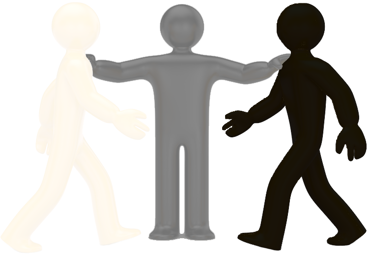

Emotion
"Gray can be perceived as emotionally distant or disconnected, and it’s associated with morally questionable matters as well. It’s neither one thing nor the other–as in "gray area," and we can think of it as being indecisive."
Gray psychology
From a color psychology perspective, gray is the color of compromise - being neither black nor white, it is the transition between two non-colors. The closer gray gets to black, the more dramatic and mysterious it becomes. The closer it gets to silver or white, the more illuminating and lively it becomes.
Emotions
Light gray creates a sense of calm, composure and relief, dark gray however gives more of a feeling of stress, mystery and despair. But whatever tint of gray you have it is stated to be be both solid and stable.
